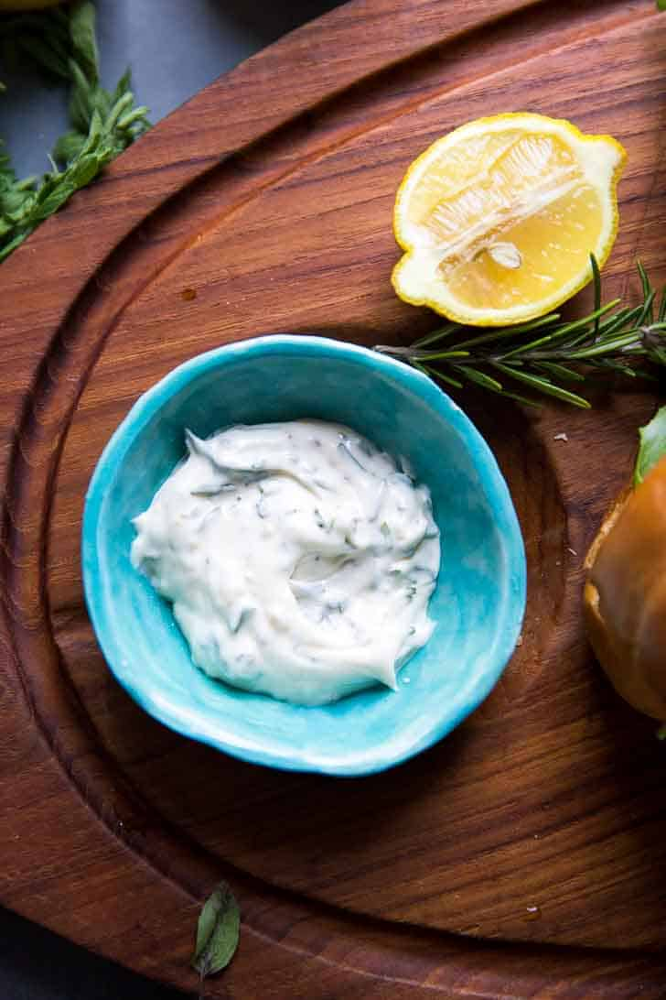

Lemon and Garlic Aioli

Description:
This is a delicious recipe that goes well on almost anything! I love
dipping figasa into this. The flavor is so bright and citrusy,
but the garlic and herbs really round it out well. I hope
you enjoy!
Ingredients:
- 3/4 cups mayo
- 2 cloves garlic
- 1 tbsp chopped tarragon
- 1 tbsp chopped rosemary
- 1 tbsp chopped oregano
- Juice and zest from 1 small lemon
- Salt and pepper to taste
Steps:
- Whisk together the mayo, garlic, herbs, lemon juice and zest.
Season mixture with salt and pepper to taste.
Home